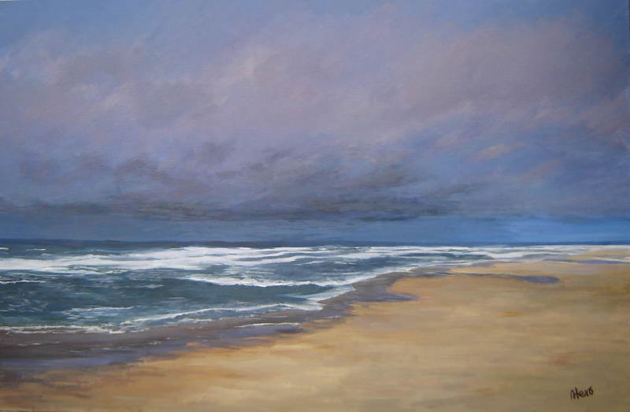
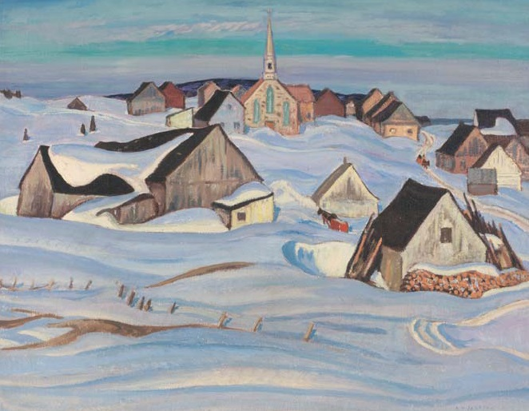
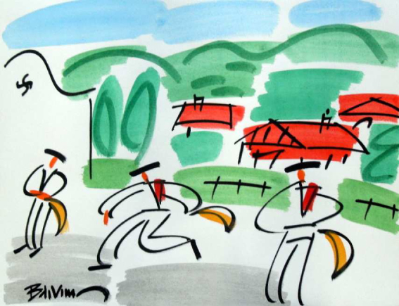
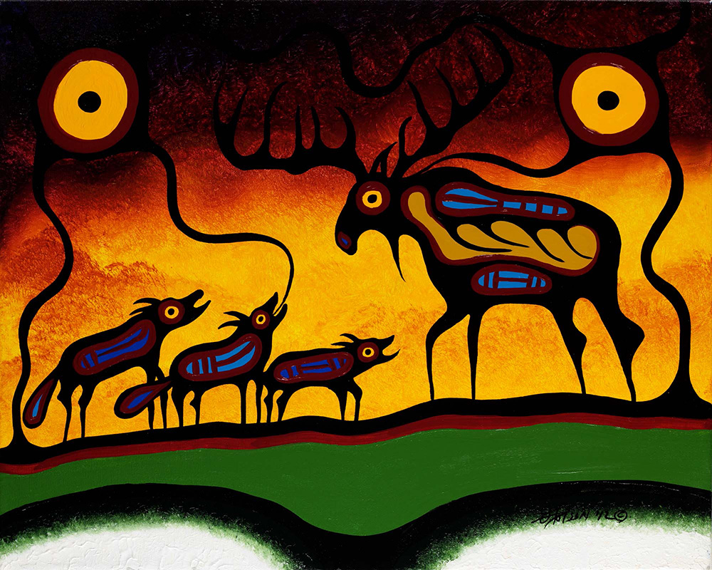
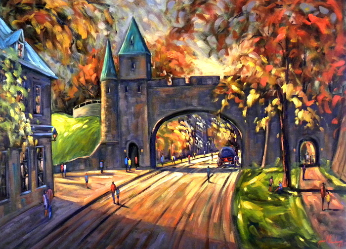
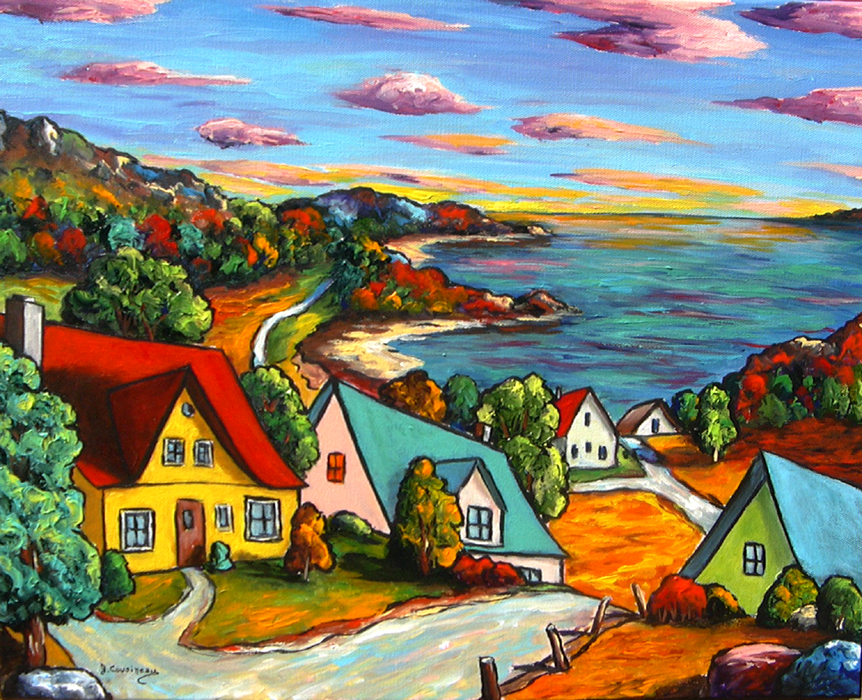
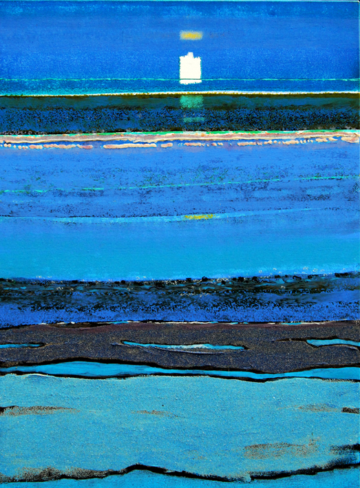
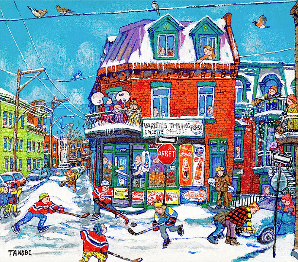
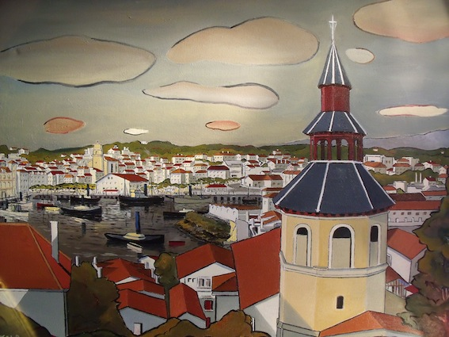

Artiste-peintre impressioniste, née à Bilbao (Espagne).
Spécialiste en peintures à l'eau et acrilyques.
Talent reconnu par la force et la profondeur de ses paysages marins.
Pour en savoir plus...

Né le 3 octobre 1882 à Montréal et mort le 5 avril 1974 à Kleinburg (Ontario),
est un peintre canadien et un membre fondateur du Groupe des Sept.
Pour en savoir plus...

Il fait la perspective à l’âge de trois ans, selon un témoignage invérifiable de ses proches.
Il fréquente un temps les cours du soir de la ville de Paris - en dessin et gravure -
et élargit peu à peu le cercle des maîtres : Delacroix, Dufy, Matisse, Marquet…
Pour en savoir plus...

Né en 1952, à Montréal, Frank est un algonquin de la communauté
de Long Point First Nation, à Winneway, dans le Témiscamingue.
Il a consacré les dix-sept dernières années de sa vie à
développer un style qui lui est propre, à la peinture acrylique.
Pour en savoir plus...

Gérard Boulanger est né à Québec en 1953 et diplômé en dessin industriel en 1972,
il exerce son métier jusqu'en 1984. Depuis il consacre tout son temps à la peinture.
Ses ceuvres sont le reflet de paysages qui l'animent où le milieu
bâti se confond avec la nature et le quotidien.
Pour en savoir plus...

Née à Montréal, elle entreprend un lauréat en piano classique
et ultérieurement un baccalauréat en Arts visuel.
Dans sa vie, peinture et musique forment un duo par excellence,
elle passe d’une passion à l’autre et sa créativité s’inspire à
voir la musique et entendre la peinture.
Pour en savoir plus...

Né à Bordeaux en l926 et disparu en Pays Basque en juillet 2004,
nous a laissé une oeuvre picturale et poétique riche et colorée.
L'océan et la mer ont toujours été au centre de son oeuvre
et au coeur de son inspiration.
Pour en savoir plus...

Peintre québécoise née en Japon en 1937. Ses tableaux peints
au nihonga illustrent la vie quotidienne montréalaise.
Membre de l'Ordre du Canada et de l'Ordre national du Québec.
Pour en savoir plus...

Né à Biarritz en 1955. Passionné de l'histoire de l'art et des effets de lumière,
il opte pour un style figuratif, en quète perpétuelle d'une recherche
sur l'atmosphère et lecontraste de couleurs d'une peinture
qu'il veut reposante et réaliste.
Pour en savoir plus...
{kind=link}
{kind=link}
{kind=link}
{kind=link}
{kind=link}
{kind=link}
{kind=link}
{kind=link}
{kind=link}